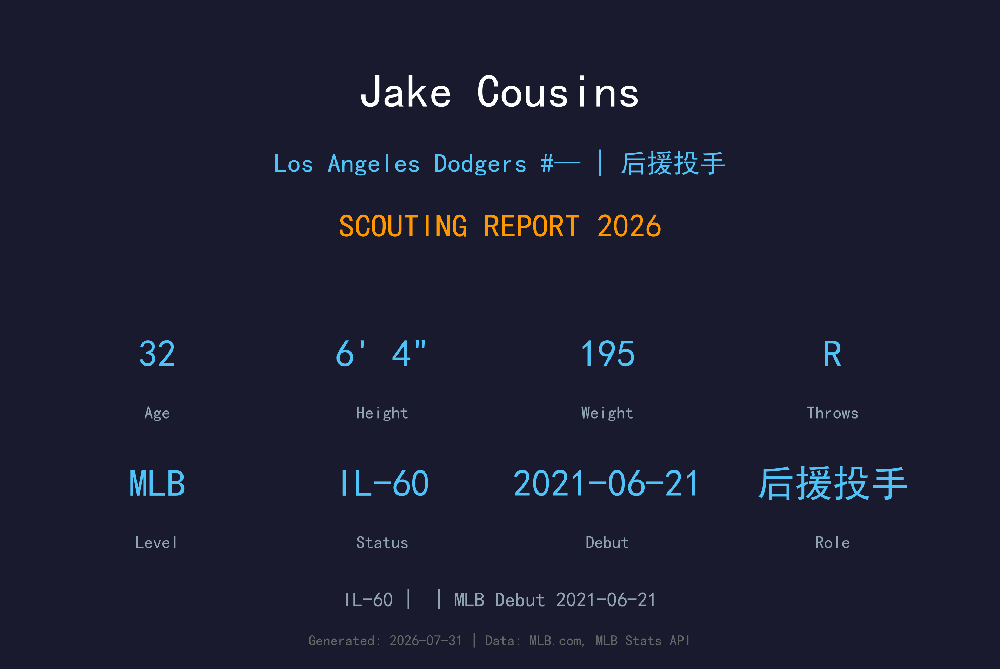
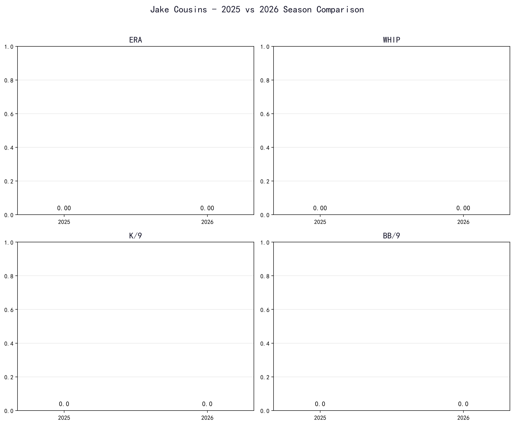
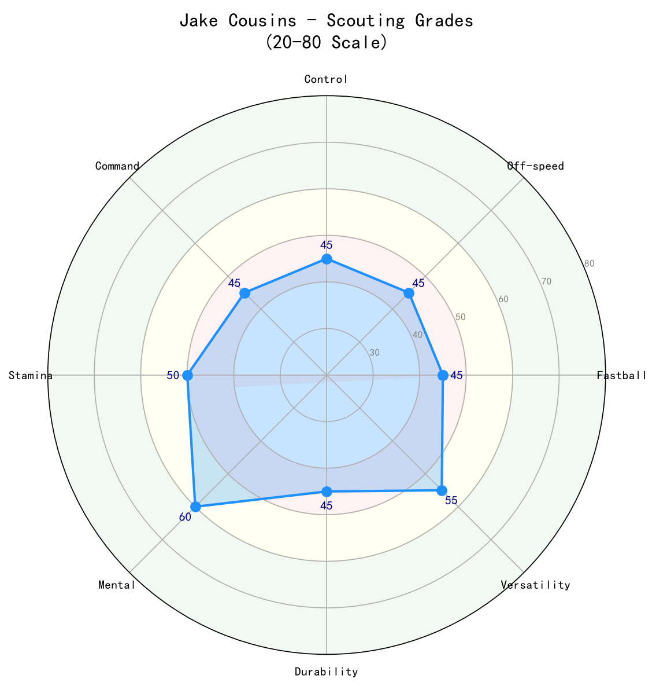

Los Angeles Dodgers #— | 投手 | 伤病名单-60

Jake Cousins 是道奇牛棚中一名以高转速滑球和重下沉快速球为武器的右手中继投手。他的大联盟生涯虽因多次伤病断断续续，但健康时展现出不俗的三振能力与压制力。2024 年在洋基队 37 场出赛、2.37 ERA 的成绩是他近年最佳表现，证明只要健康就能成为可靠的后援。然而，频繁的伤病与控球不稳始终是他的最大隐忧。2026 年赛季他进入 伤病名单-60，目前道奇正在等待他康复归队，预期他将从低杠杆中继角色重新起步。
Jake Cousins 在 2017 年 MLB 选秀第 20 轮被选中，开启职业棒球生涯。
Jake Cousins 于 2021-06-21 (酿酒人队) 登上大联盟，开始在高水平舞台展现自己的实力。
Jake Cousins 目前因伤位于 伤病名单-60 名单。恢复后，他将重新回到道奇的投手阵容中。
2026 年大联盟样本有限或尚未登上大联盟，数据主要参考小联盟与过往表现。

📈 上图为近三年核心数据趋势。柱状图高度代表该年度表现，便于快速比较球员状态的上升或下滑。
| 统计项目 | 数值 |
|---|---|
| 出赛 (G) | 88 |
| 胜场 (W) | 5 |
| 败场 (L) | 2 |
| 救援成功 (SV) | 1 |
| 中继成功 (HLD) | 16 |
| 自责分率 (ERA) | 2.68 |
| 投球局数 (IP) | 90.2 |
| 被安打 (H) | 56 |
| 全垒打 (HR) | 10 |
| 三振 (K) | 125 |
| 保送 (BB) | 57 |
| WHIP | 1.25 |
| K/9 | 12.42 |
| BB/9 | 5.66 |
| K/BB | 2.19 |
| HR/9 | 0.99 |
Cousins 的伸卡球并非传统意义上的地面球机器，但下沉与尾劲足以制造软弱击球与滚地球。他依靠这颗球来抢好球数，并搭配滑球制造 speed differential。对右打者时，低角度的伸卡球能压到内角，产生断棒或 软弱击球。
Cousins 的招牌球种与主要出局武器。转速 与横向位移均属上乘，对右打者具有极大威胁，是两好球后的首选配球。2024 年在洋基队三振率 12.55 K/9，这颗滑球功不可没。他偶尔会过度依赖滑球，导致控球不稳时连续保送。
偶尔用来提升 视线高度 或改变节奏，非主要武器。Cousins 的身材（6'4"）让他能制造不错的下压角度，四缝线主要用于与伸卡球形成高低/垂直位移差异。
对左打者的配球，使用比例不高。当变速球有指挥官时，能有效降低左打者的命中率；但稳定性不足，通常只在需要第二次变化球时出现。
Cousins 采用标准高四分之三（over-the-top）到四分之三（three-quarters）的投球角度，出手点较高，配合 6 尺 4 寸的身高，让球从打者视角上方进入。他的动作节奏偏快，跨步幅度大，能借助下半身创造球速。然而较快的动作节奏与较高的手臂 出手点 也可能是他手臂疲劳与伤病反复的诱因之一。

| 项目 | 评分 (20-80 量表) | 等级 |
|---|---|---|
| 伸卡球 (Sinker) | 55 | B |
| 滑球 (Slider) | 60 | B+ |
| 四缝线 (Fastball) | 50 | B- |
| 变速球 (Changeup) | 40 | C |
| 控球 (控球) | 40 | C |
| 指挥 (控球精准度) | 45 | C+ |
| 心理素质 (Mental) | 50 | B- |
| 耐力/健康 (Durability) | 35 | D+ |
| 三振能力 (Strikeout Ability) | 60 | B+ |
健康时的 Cousins 拥有 MLB 级别的滑球与三振能力，但伤病史与控球不稳让他的整体评价停留在"有潜力但需谨慎使用"的中继投手。若 2026 年能成功回归并稳定出赛，他有机会成为道奇牛棚 depth piece。
B- 级 / 伤病高风险的潜力后援
Jake Cousins 出生于纽约州 Rye，成长过程中同时展现棒球天赋。他进入宾夕法尼亚大学（University of Pennsylvania），在常青藤联盟中担任先发投手，以三振能力与身材潜力受到球探关注。2017 年 MLB 选秀中，他在第 20 轮被密尔瓦基酿酒人选中。
Cousins 在酿酒人农场体系中逐步转型为后援投手，凭借高转速滑球与快速球组合在 2021 年登上大联盟。他的大联盟首秀日期是 2021 年 6 月 21 日，对芝加哥小熊队出赛。
Cousins 以低调、专注著称，场上不张扬但极具竞争心。他的滑球是他多年训练打磨出的武器，也是他在大联盟立足的根本。若能克服伤病，他仍有机会在道奇王朝中扮演一角。